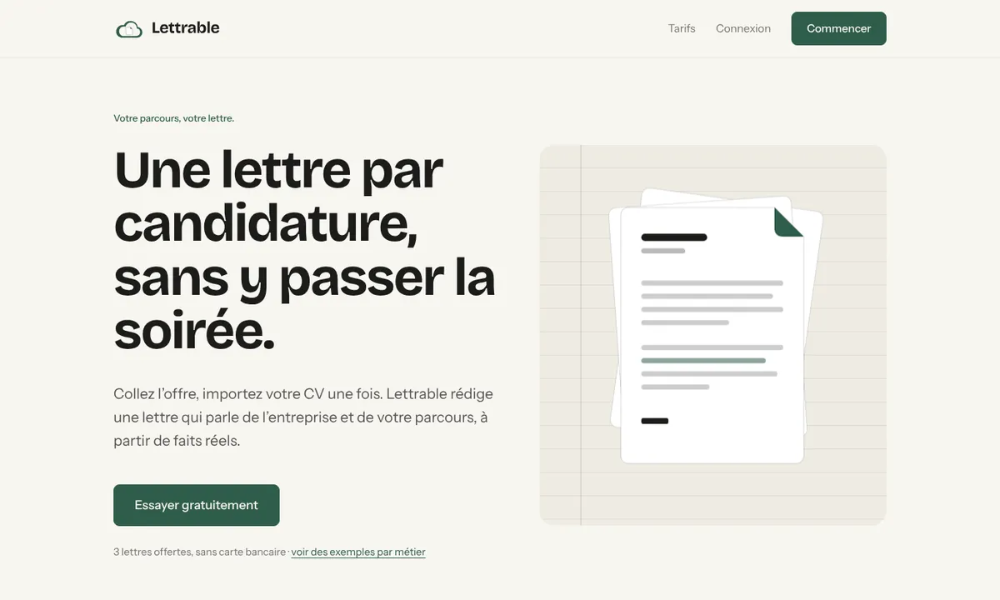
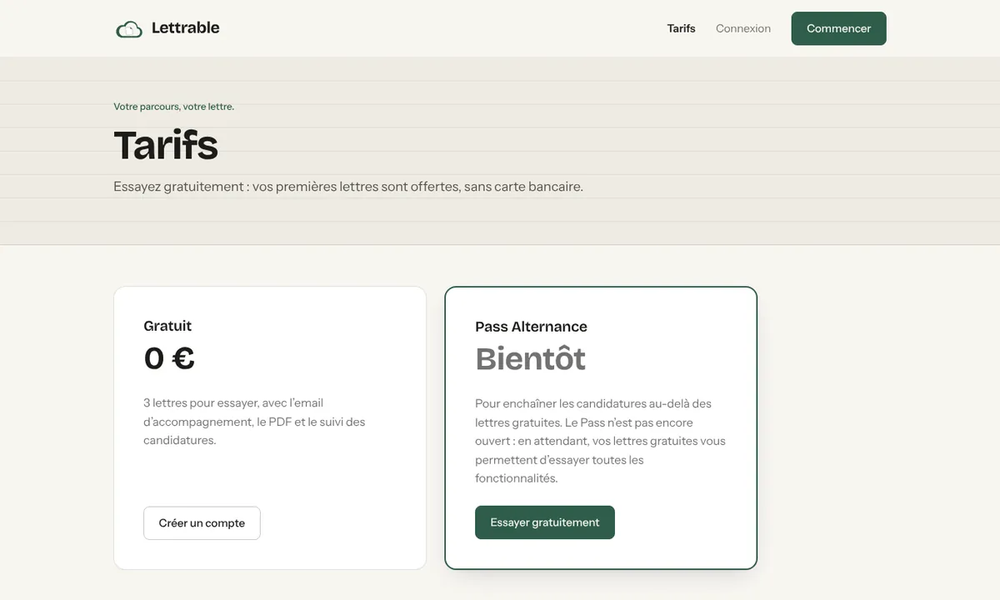
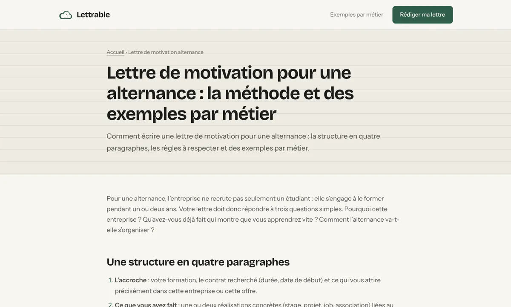

Projet personnel · projet phare
Lettrable : des lettres de motivation personnalisées par IA
Aider les étudiants à écrire une lettre de motivation personnalisée pour chaque candidature (alternance, stage ou école), à partir de faits réels plutôt que de phrases toutes faites.
- Année
- 2026
- Cadre
- Projet personnel
- Équipe
- Seul
- Statut
- En ligne
01Contexte
- Cadre : projet personnel, 2026, développé seul.
- En ligne : lettrable.fr
02Objectif
Aider les étudiants à écrire une lettre de motivation personnalisée pour chaque candidature (alternance, stage ou école), à partir de faits réels plutôt que de phrases toutes faites.
03Fonctionnalités principales
- Import du CV (PDF ou Word), analysé et structuré automatiquement.
- Lecture de l'offre à partir de son lien (Welcome to the Jungle, HelloWork, France Travail…).
- Recherche d'informations sur l'entreprise à partir de son site.
- Lettre adaptée au type de candidature et au ton choisi (sobre ou dynamique), avec l'e-mail d'accompagnement et un PDF.
- Bibliothèque de « preuves » (projets, stages, expériences) réutilisées d'une lettre à l'autre.
- Suivi des candidatures (envoyée, entretien, refusée, acceptée).
- 3 lettres offertes à l'inscription. Un abonnement (« Pass Alternance ») est prêt côté paiement, mais pas encore ouvert.
- Pages d'exemples par métier, générées automatiquement pour le référencement.

Le message tient en une phrase : coller l'offre, importer son CV une fois, et obtenir une lettre fondée sur des faits réels. Le bouton « Essayer gratuitement » rappelle les 3 lettres offertes, sans carte bancaire.

L'offre gratuite et le Pass Alternance. Le paiement Stripe est prêt, mais la souscription reste fermée (« Bientôt ») : l'interface lit cet état sur le serveur, sans nouvelle mise en ligne pour l'ouvrir.

Pages statiques générées à la construction du site, une par métier, avec un sitemap : elles amènent des visiteurs depuis Google sans dépendre de l'application.
04Architecture
- Front Svelte
- Application Svelte 5 construite avec Vite : import du CV, rédaction des lettres, suivi des candidatures.
- API Express
- Lit l'offre et le site de l'entreprise, prépare les consignes pour l'IA et décompte les crédits.
- Services
- Supabase (base PostgreSQL et comptes), Mistral (rédaction des lettres), Stripe (abonnement).
Supabase gère la base de données et l'authentification, Mistral génère les lettres, Stripe gère l'abonnement. L'application tourne dans un conteneur Docker sur un VPS.
05Défis et solutions
- Empêcher l'IA d'inventer.
Elle ne reçoit que des faits vérifiés (CV, offre, pages du site de l'entreprise) avec la consigne de n'utiliser que ce qui y figure. Les consignes restent sur le serveur : le navigateur n'envoie que des identifiants.
- Lire des CV en deux colonnes.
Le texte extrait mélangeait les colonnes. Les éléments sont regroupés par ligne puis par colonne avant l'analyse.
- Éviter qu'une rafale de clics consomme plusieurs crédits ou en contourne la limite.
Le décompte est fait par des fonctions SQL atomiques, avec remboursement si la génération échoue.
06Évolutions possibles
Ouverture du Pass Alternance, modèles de CV.